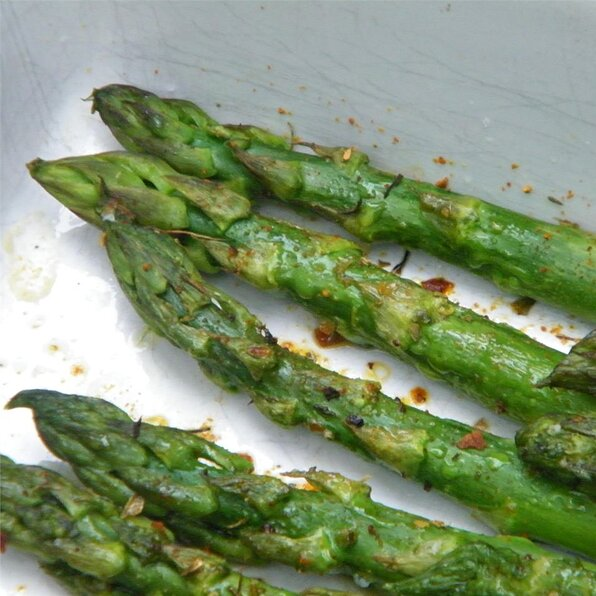

Superfast Asparagus

Description
A quick 15-minute asparagus side dish.
Ingredients
- 1 pound asparagus
- 1 teaspoon Cajun seasoning
Steps
- Preheat oven to 425 degrees F (220 degrees celcius)
- Snap the asparagus at the tender part of the stalk. Arrange spears in one layer on a baking sheet. Spray lightly with nonstick spray; sprinkle with the Cajun seasoning.
- Bake in the preheated oven until tender, about 10 minutes.